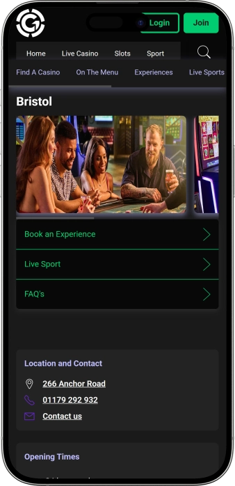

Exclusive welcome offer of
Exclusive welcome bonus of
Grosvenor Casino Bristol — games, bonuses, atmosphere and nightlife
Top Casinos
Bonus Details
Casino
Bonuses
Rate
Free Spins
More Info
Get
Advantages
-
Big jackpots and frequent payouts
-
Slot bonuses for active play
-
Tournaments with strong prize pools
-
Wide choice of tables and limits
-
Professional dealers, fast service
-
Convenient location, easy access
-
Comfortable lounge and bar areas
- The venue blends a classic casino feel with modern comfort. It’s easy to tailor the night to your mood, from relaxed play to high-energy sessions. Regular guests can typically expect perks and personalised offers.
Grosvenor Casino Bristol App


About Grosvenor Casino Bristol
What sets it apart is the mix of live tables and a lively entertainment-led night under one roof. The atmosphere suits both newcomers and seasoned players, with plenty of reasons to return for recurring offers.
- Jackpots up to £50,000.
- Match bonuses up to £100.
- Tournament wins to £5,000.
Grosvenor Casino Bristol is a night-out spot built around classic casino play and a modern vibe. Inside, you’ll typically find a blend of lively energy and traditional casino style. The game selection suits both steady, unhurried sessions and more fast-paced play.

The layout is designed for comfort, making it easy to switch between playing and taking breaks. Live tables are usually run by professional dealers who keep the game flowing smoothly. If you prefer straightforward options, there are slots and electronic versions of popular games. The bar area adds a relaxed social layer to the experience. The venue often leans into themed nights and extra entertainment to round out the evening. Regular guests can generally expect perks and rewards. It’s a strong choice for a fun, organised night without unnecessary fuss.
Grosvenor Casino Bristol — stylish evening, games and atmosphere
Grosvenor Casino Bristol feels like a modern city casino with a recognisably classic core: warm lighting, well-spaced tables, and a sense of comfort even when the room is busy. The mood typically sits between a polished night out and an approachable, friendly venue where you don’t need to overthink it. Design choices often prioritise ease — comfortable seating, clear zoning, and enough space to avoid that cramped feeling. It works well for a quick stop-in or a full evening.
In terms of opening hours, it’s the sort of place you can usually rely on late into the night rather than being tied to standard daytime schedules. Even if you’re not planning a long session, it’s easy to pop in for a drink or to watch the tables in action. Live tables are generally most active from afternoon into the evening as the venue’s energy builds. The rhythm can vary by day, with the busiest stretch typically landing in the evening and overnight. That creates a natural flow where the night can start calm and build into something more lively.
The bar side in casinos like this often acts as the social hub — a place to meet, reset between games, and keep the night feeling smooth. Menus usually lean on reliable cocktails, classic spirits, non-alcoholic options, and easy-going bites that pair well with play. On some nights the bar area becomes the main attraction, with guests coming as much for the atmosphere as for the games. It’s convenient: you can switch from play to relaxation without leaving the venue.
An on-site hotel is not typically the centrepiece of a city casino venue, but the location normally offers plenty of nearby accommodation choices. Many guests plan a stay close by so they can enjoy the evening without rushing the end. Front-of-house staff can often point out what visitors tend to choose and which areas feel easiest for getting around. That makes the overall trip more comfortable, especially if you’re finishing late.
Events and entertainment are a big part of the experience, because modern casinos often operate as full evening destinations. Theme nights, game-led activities, and seasonal moments add variety and encourage return visits. You’ll commonly see formats involving hosts, draws, and extra prizes that heighten the sense of occasion. The entertainment angle is especially noticeable at weekends, when guests come for the vibe as much as the play.
Bonus and loyalty-style programmes are usually built around rewarding active guests: the more consistently you play, the more tailored offers you can receive. These can include game-related incentives, event invitations, venue compliments, and improved conditions for regulars. It’s worth checking the rules and limits so you understand how benefits are earned and used. Over time the experience can feel more personalised, making it easier to plan nights around the options you enjoy most.
Service, payment and receipt of winnings at Grosvenor Casino Bristol
Staff on the floor typically follow big-brand standards: front-of-house supports entry and basic rules, dealers keep tables running smoothly, and managers focus on comfort and safety. Communication is usually polite and practical — you’ll be directed to the right game areas, limits, and the key processes you need to know. Newer players are often given a simple overview so they feel confident. During peak evening hours things move faster, but the service structure stays consistent.
English is the main language of service, and in busy city venues you’ll often find team members who speak additional languages. If a particular language matters to you, you can usually ask whether another colleague can assist. Core rules and paperwork are generally presented in a standard, easy-to-follow way. Bringing valid ID is wise, as checks are common practice.
Payments and currency typically follow standard expectations: cash is accepted in the primary local currency, and card use depends on banking rules and venue policies. Common options usually include debit cards, plus certain permitted electronic payment methods that align with responsible gambling requirements. Credit cards may be restricted for gambling-related transactions, so it helps to have a backup plan. For larger spending, many guests prefer a mix of card and cash.
ATMs are often available on-site or very close by, making it easy to access cash when needed. Currency exchange within a casino can be limited or handled under specific procedures, so it’s best to arrive with what you need if exchange is important. Where exchange is available, conditions typically depend on the amount and the venue’s current process. For higher-value transactions, additional checks can apply — a standard part of financial compliance.
Winnings at a land-based casino are usually paid out on-site: smaller amounts are commonly settled in cash, while larger amounts follow cashier procedures and internal rules. In some cases, alternative payout routes may be offered if they fit policy and verification requirements. Significant wins can trigger extra identification requests and may take longer due to confirmations. That’s normal and helps protect both the guest and the venue.
Tax treatment is generally handled on a broad principle: casinos don’t typically withhold tax automatically from ordinary player winnings, but individual circumstances can differ. If you have a specific tax status, treat play as a professional activity, or win a large sum, it’s sensible to check details with a qualified adviser. Rules and interpretations can change, so take a careful, well-documented approach for major wins. This keeps the post-win process clear and stress-free.
Rules for visiting Grosvenor Casino Bristol — dress code, entrance and facilities
Entry is generally limited to adults, and you may be asked to show valid ID at the door. Arriving in a suitable condition matters, as guest safety and comfort are priorities. The dress code is commonly smart casual to keep the atmosphere polished. Very sporty, beach-style, or overly scruffy outfits are often discouraged, especially later in the evening. Inside, respectful conduct is expected; you shouldn’t disrupt other players or staff. Photography in gaming areas is often restricted to protect privacy. Smoking is typically limited to designated areas or not permitted indoors at all. If rules are breached, staff may ask you to stop or to leave. For group visits, planning ahead helps ensure a smooth experience. Getting there is usually easy by public transport or taxi, while drivers should consider nearby paid parking options. Peak hours can mean a short wait at entry and cloakroom areas. Before playing, it’s sensible to confirm table rules and betting limits.
Dress code
- • Smart casual is the safest choice
- • Neat footwear and tidy appearance
- • Avoid beachwear and dirty sports kit
Entry conditions
- • Adults only (18+)
- • ID checks when required
- • On-the-spot guest registration may apply
Prohibited behaviour / restrictions
- • Photo/video in gaming areas subject to house rules
- • Aggression and dealer disputes are not acceptable
- • No coaching, signalling, or interference with play
Parking and getting there
- • Easy by taxi and public transport
- • Paid car parks are usually nearby
- • Arrive earlier in the evening
Grosvenor Loyalty Program — Levels, Points, and Privileges
A casino loyalty programme is typically designed to reward repeat guests and make regular visits feel better value. The idea is straightforward: you sign up, then earn points or status credits through play at tables and slots. The more consistently you visit, the more benefits usually become available. Beyond baseline rewards, you’ll often see personalised offers shaped around your preferences. Earning rates can differ by game type and limits, and rewards may come with expiry dates and usage rules. Status tiers commonly unlock improved value, such as faster earning and invitations to special events. Regulars often appreciate comfort-led perks like priority service, venue compliments, and tailored conditions. Responsible gambling tools are also commonly built in, including limits, reminders, and self-exclusion options. To get the most out of it, it helps to check current promotions and earning rules. Below is a typical structure used in venues of this style to explain how the system usually works.
Registration conditions
- • Age and ID: 18+, identity verification during sign-up
- • Contact details: phone number or email for updates
- • Consents: acceptance of terms and responsible gambling policies
- • Card/account: a membership card or digital profile
Tiers and how to reach them
- • Classic — entry level after joining; points earning enabled
- • Silver — from 1,000 status credits in 90 days; +10% earn boost
- • Gold — from 3,000 credits in 90 days; +25% earn boost and event priority
- • Platinum — from 7,500 credits in 90 days; +40% earn boost and VIP-style invites
Bonuses and perks
- • Play credit: £10–£25 in game vouchers after hitting monthly activity targets
- • Cashback week: 5% back (up to £50) on qualifying slot sessions
- • Tournament tickets: £10–£30 entry value, earned via weekly objectives
- • Venue compliments: drink or snack up to £15 at higher tiers
- • Accelerated earning: +10% / +25% / +40% points by tier
- • Birthday treat: reward pack up to £20 in vouchers or chips (cashier rules apply)
- • Priority service: faster support at peak times via dedicated help points
Software Providers
Entertainment and Gaming at Grosvenor Casino Bristol
Bonuses and special offers at Grosvenor Casino Bristol — games, events, seasons
Beyond the loyalty scheme, casinos often run separate offers that make a visit feel more eventful and potentially better value. These promotions are commonly tied to specific weekdays, time windows, or featured games. Game-led promos can include prize draws, extra payouts, tournament activity, and small “boost” rewards. Slot-focused deals are especially common because they pair naturally with daily tasks and timed draws. Table game nights can spotlight roulette, blackjack, or poker with themed hosting and added incentives. Seasonal campaigns are another major category, bringing themed décor, hosts, and prize-led moments around key calendar periods. You may also see “play + bar” style bundles that add a drink or discount when you meet evening conditions. Nearly all promos come with limits, timeframes, and minimum activity rules. Eligibility can also depend on game type and stake level, so it’s worth checking the details on arrival. Below are example formats and figures commonly used in this style of promotion.
- • Welcome play voucher: £10–£20 for a first session when signing up on-site
- • Slot happy hours: +20% bonus credit up to £30 during set hours
- • Daily prize draw: £50–£500 prizes for qualifying guests each day
- • Slots tournament: £1,000–£3,000 prize pool, £10–£25 entry
- • Poker series: £2,000–£10,000 guaranteed pool on selected nights
- • Blackjack hit bonus: £25–£100 fixed payout for rare combos (promo rules apply)
- • Roulette night: £5–£15 extra chips with selected buy-ins
- • “Play + cocktail” bundle: drink compliment up to £12 on qualifying nights
- • Seasonal VIP draw: top prize up to £2,000 during holiday periods
- • Friends nights: £5–£10 voucher for group visits (restrictions apply)
Popular games at Grosvenor Casino Bristol — from classics to modern formats
A venue like this typically balances live dealer tables with slots, making it easy to choose your pace and play style. If you enjoy atmosphere, live tables tend to deliver the ritual, social energy, and the feel of a “proper” casino session. For quick decisions and short bursts, many guests go for slots because there’s no waiting for a seat and budgets are flexible. Poker stands out for its strategic and psychological layers, where decisions matter as much as luck. Roulette remains a signature choice thanks to straightforward rules and a wide range of bet types. Blackjack appeals to players who like making choices and thinking in probabilities. Baccarat is often associated with calm, clean gameplay and fast rounds. Electronic tables suit those who want familiar rules with a quicker rhythm. You may also come across variations and mini-formats for trying something different. Below is a concise overview of the most popular options.
- • Roulette — classic bets, pace, and spectacle
- • Blackjack — player decisions matter, simple maths
- • Poker (tournament/cash) — strategy, opponents, multiple formats
- • Baccarat — fast rounds and minimal bet structure
- • Slots — themed variety, bonus rounds, progressive jackpots
- • Electronic roulette — faster flow, newcomer-friendly
- • Electronic blackjack — same core idea, less waiting
- • Live variations — side bets and rule twists (table dependent)
Minimum and maximum bets at Grosvenor Casino Bristol
Betting ranges in a casino typically depend on the specific table, the time of day, and how busy the floor is. Some limits are newcomer-friendly, while others are aimed at higher-stake play. Below are practical guide figures that are commonly seen in venues of this style. Always confirm the exact limits with the dealer or floor team before you sit down.
| Game Type | Minimum Bet | Maximum Bet |
|---|---|---|
| Roulette (live table) | £2 | £500 |
| Blackjack (live table) | £5 | £1,000 |
| Baccarat | £10 | £2,000 |
| Poker cash (blinds) | £1/£2 | £5/£10 |
| Poker tournament (buy-in) | £20 | £200 |
| Electronic roulette | £0.50 | £100 |
| Slots (per spin) | £0.10 | £5 |
| Table side bets | £1 | £50 |
Events and entertainment at Grosvenor Casino Bristol — evening format and night energy
A casino like this often operates as a full evening destination where gaming is only part of the storyline. The mood can shift across the week: midweek tends to suit calmer sessions and bar-led social time, while weekends bring more energy and a louder night-out feel. Themed nights appear from time to time, spotlighting certain games with hosts, draws, and a more celebratory setup. That approach keeps the experience fresh and encourages repeat visits.
A key strand is regular poker activity and tournament-style formats. Tournaments and mini-series add competition and build a sense of community, where familiar faces return for “their” game. Alongside poker, table-game nights may run with promo mechanics or added prize moments. For many guests, that dependable schedule is what makes planning a visit worthwhile.
Off-table entertainment is often built around the bar, music, and late-night timing. The night can start with cocktails and conversation, then shift into a more night-time rhythm as the floor gets busier. On selected evenings, a DJ or music-led ambience can lift the lounge areas so the venue doesn’t feel purely table-focused. Even without a standalone nightclub, lighting, music, and crowd energy can create a club-adjacent vibe.
Seasonal moments typically amplify the experience: holidays, sporting occasions, and calendar milestones become reasons for special programming. Prize draws, gift-style promos, and themed menus are commonly used to make the night stand out. Groups may also be accommodated with pre-arranged visit formats for celebrations or corporate socials. The end result is a varied night where you can switch between play, drinks, and atmosphere.
- • Themed gaming nights — host-led moments, draws, special rules
- • Poker tournaments — regular events with buy-ins and prizes
- • Poker series — multi-day formats with a league-like feel
- • Bar-led evenings — cocktail offers, easy music, social pace
- • DJ sets / music nights — late-night ambience in lounge areas
- • Seasonal events — themed décor, menus, and prize moments
- • Group visit formats — pre-arranged nights for parties and socials
- • Sport viewing (where available) — broadcasts with a lounge rhythm
Bars, restaurants and relaxation at Grosvenor Casino Bristol — how the evening is arranged
The bar and lounge side of a casino is usually designed so the night isn’t only about staking. You can start with a drink, take a reset between sessions, share the moment with friends, then return to play at your own pace. Cocktail menus tend to focus on dependable classics alongside popular mixes, with non-alcoholic choices available too. That makes it easy for groups where gaming is only part of the plan.
Food in venues like this is often built around comfort and convenience: options that suit different tastes without dragging the evening into a long sit-down unless you want it. You’ll commonly find snacks, hot dishes, and quicker choices so you can eat without losing the flow of the night. Later hours often lean into “night food” — satisfying, straightforward plates that pair well with a social atmosphere. Service aims to keep the standard aligned with a casino-style night out.
When it comes to hotels, a city casino is typically the centre of an evening route rather than a place with accommodation built in. Guests usually choose nearby stays so they can end the night without rushing. Around the venue you’ll generally find multiple categories of accommodation, making it simple to combine the visit with dinner or other plans. For special occasions, booking a close-by stay and sorting late-night transport in advance can make the whole experience feel seamless.
Rest inside the venue is about mixing play with pauses: watching the action, chatting, dipping back into slots or tables, and changing pace as the night evolves. Groups often value relaxed seating where they can gather without disturbing other guests. The better you shape the evening — drinks, play, food, and calm intervals — the more complete the night feels. In that sense, the casino becomes a cohesive outing rather than a single-purpose stop.
- • Bar — cocktails, classic drinks, social focus
- • Lounge seating — breaks between sessions, comfortable waiting
- • Restaurant / kitchen area — hot dishes and evening-friendly options
- • Quick bites — fast refuel without interrupting the night
- • Nearby hotels — close-by stays for an easy finish
Frequently Asked Questions
Venues of this type generally aim to support accessibility, with practical entrances and staff assistance. You can request help on arrival.
Hard limits are uncommon, but the venue can refuse service if rules or safety requirements are breached. Responsible play is also expected.
Yes, responsible gambling tools are typically available, including limits and self-exclusion options. Staff can explain how to set these up.